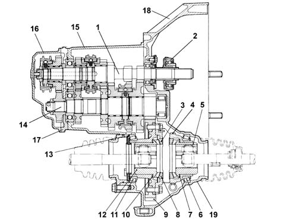
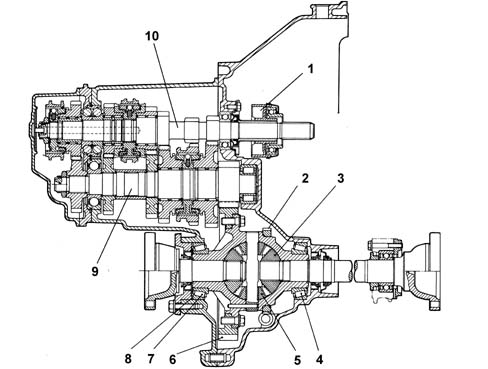
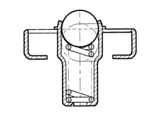
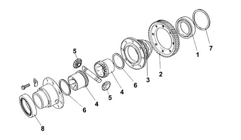
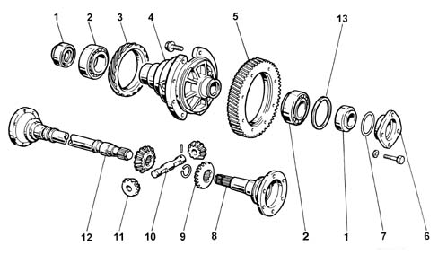

Introduction - MANUAL GEARBOX AND DIFFERENTIAL
- Path
- Descriptions > 21 GEARBOX > 2110 MANUAL GEARBOX AND DIFFERENTIAL > Introduction - MANUAL GEARBOX AND DIFFERENTIAL
- Kind
- system description
- Applies to
- all engines; all production periods
- Interactive page
- https://sloeber94.github.io/elrnDB-fDbl/en/#/2585403
Applies to: all engines; all production periods
The structure of the gearbox consists of:
- a gear casing, which contains and supports the main shaft and the layshaft, the rods, the forks and the gear selection and engagement device;
- a rear cover that contains the 5th speed gears;
- the plate retaining the main shaft and layshaft rear bearings;
- a casing joining the gearbox to the engine, which contains the clutch thrust bearing and control linkage.
Because the vehicle is front wheel drive, the rear part of the gearbox (considering the vehicle's direction of motion) also houses a differential case which contains:
- the ring gear connecting the differential to the layshaft,
- the planet gears and conical roller bearings and adjustment shims,
- the satellite gears,
- the speedometer idler gear.
Applies to: all engines; all production periods
C513 GEARBOX
.

1, Main shaft 2, Thrust bearing 3, Satellite gear 4, Speedometer gear 5, Planet gear 6, Conical roller bearing 7, Differential gear adjustment shim 8, Satellite gear 9, Ring gear 10, Differential gear adjustment shim 11, Conical roller bearing 12, Planet gear 13, Differential housing bearing adjustment shim 14, Layshaft 15, Gear casing 16, Rear cover 17, Rear bearing retaining plate 18, Gearbox bell housing 19, Differential case
Applies to: all engines; all production periods
C510 GEARBOX
.

1, Thrust bearing 2, Speedometer gear 3, Planet gears 4, Conical roller bearing 5, Satellite gears 6, Ring gear 7, Conical roller bearing 8, Differential housing bearing adjustment shim 9, Layshaft 10, Main shaft
Applies to: all engines; all production periods
Mainshaft
The main shaft consists of:
- 1st, 2nd speed and Reverse gears fitted directly on the shaft
- 3rd, 4th and 5th speed gears fitted on the shaft
The main shaft is supported by two press-fitted ball bearings. The rear bearing is on a special support plate secured to the gear casing and the front bearing is on the gearbox bell housing.
Applies to: all engines; all production periods
Layshaft
The layshaft supports the 1st and 2nd speed gears on roller bearings, while the 3rd, 4th and 5th speed gears are fitted to the shaft by means of grooved spur-toothed couplings.
The layshaft is supported by:
- a front roller bearing fitted to the gearbox bell housing
- a rear ball bearing fitted to a special support plate secured to the gear casing
Applies to: all engines; all production periods
Gears
The gears are the following type:
- helical toothed for the forward speeds
- straight toothed for reverse.
Applies to: all engines; all production periods
Synchronisers
The synchronizers for the forward speeds are the Borg-Warner type.
The arrangement for the synchronizers is the split type because the synchronizers for the 1st and 2nd speeds are fitted on the layshaft, whilst those for the 3rd, 4th and 5th speeds are on the main shaft.
This solution reduces gearbox noise in neutral from the moment 3 of the 5 pairs of gears are not driven.
In addition, the engagement and synchronization loads are reduced as a result of the corresponding reduction in the inert masses rotating downstream of the crankshaft.
The synchronisers used for all speeds adopt a new type of presynchronisation block to replace the conventional rollers and springs. This consists of a spring and ball within single unit that cannot be dismantled.
This solution facilitates dismantling during service.

Applies to: all engines; all production periods
Differential
The differential unit in the C.513 gearbox is position behind the gear casing in relation to the vehicle's direction of motion.
This consists of:
- a crown wheel and pinion reduction
- two half casings which include the differential and planet gears.
The differential is supported by two taper roller bearings which should be preloaded before fitting.
The two drive shafts that transmit drive to the wheels slide on three splines inside the differential gears by means of a tripod joint.
The gear that transmits motion to the mileometer electronic sensor is fitted on the outside of the differential housing.

1, Bearing for differential housing 2, Ring gear 3, Speedometer gear 4, Differential gears 5, Planet gears 6, Planet gear adjustment shims 7, Differential housing bearing adjustment shim 8, Bearing for differential housing
Applies to: all engines; all production periods
Differential
On the C.510 gearbox the differential unit is located at the rear of the gearbox casing.
This consists of:
- a crown wheel and pinion reduction;
- a differential housing constructed in a single piece which includes the planet and satellite gears.
The differential is supported by two taper roller bearings which should be preloaded before fitting.
The planet gears have a splined profile with which the two flanged couplings connected to the two driveshafts which transmit the power to the wheels mesh.
The gear that transmits motion to the mileometer electronic sensor is fitted on the outside of the differential housing.

1, Gasket 2, Bearings for differential housing 3, Gears for speedometer 4, Differential housing 5, Ring gear 6, Flange retaining differential housing to gearbox casing 7, Seal 8, Left driveshaft attachment flange 9, Planet gears 10, Satellite carrier shaft 11, Satellite gears 12, Intermediate shaft 13, Adjustment shim.